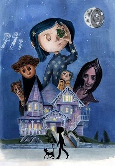
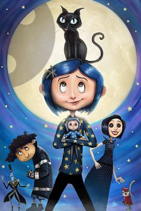
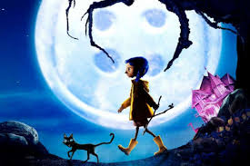

Coraline é uma menina que encontra uma porta secreta para um mundo paralelo onde tudo parece perfeito. lá,ela conhece sua outra mãe,que tenta prende-la para sempre.ao descobrir que esse lugar é perigoso,coraline enfrenta seus medos, salva outras crianças e consegue voltar para casa, aprendendo a valorizar sua familia e sua vida real.

Uma aventura misteriosa em um mundo secreto cheio de surpresas e perigos.
Coraline encontrou uma porta escondida atrás de uma parede falsa no novo apartamento. Não parecia nada importante, só uma madeira antiga, meio torta, como se tivesse sido esquecida ali de propósito.Naquela noite, quando o prédio ficou silencioso, ela abriu a porta. do outro lado não havia um mundo bonito nem assustador de imediato. Era só um corredor longo, estreito, iluminado por uma luz fraca que parecia não vir de lugar nenhum. O chão era coberto por uma poeira que não levantava quando pisava, como se estivesse presa ao próprio espaço. Coraline entrou mesmo assim. Quanto mais andava, mais o corredor mudava de forma, como se estivesse tentando decidir para onde levá-la. As paredes tinham marcas que pareciam desenhos feitos às pressas, mas que se apagavam quando ela tentava olhar direto.fim do corredor havia uma cidade pequena, mas estranha. Tudo parecia normal à distância, mas de perto nada encaixava direito: janelas que não davam para dentro das casas, ruas que terminavam em paredes lisas, e relógios que marcavam horas diferentes sem motivo.Não havia muitas pessoas, e as poucas que existiam agiam como se estivessem sempre um pouco fora de sincronia com o próprio corpo.Coraline tentou falar com alguém, mas as palavras não pareciam ser ouvidas direito, como se atravessassem o ar sem pousar em ninguém.Ela percebeu então que aquele lugar não era uma cópia do mundo dela nem um sonho. Era um espaço incompleto, que mudava o suficiente para nunca ser totalmente entendido.

O filme **Coraline** é uma animação em stop-motion lançada em 2009. Ele foi dirigido por **Henry Selick**, que também é conhecido por trabalhar em produções como *O Estranho Mundo de Jack*. A produção ficou por conta do estúdio **Laika**, que se especializou justamente nesse tipo de animação detalhada e feita quadro a quadro. história original veio do livro *Coraline*, escrito por **Neil Gaiman** em 2002. Ele criou a narrativa como um conto de fantasia sombria, voltado tanto para jovens quanto para adultos, misturando curiosidade infantil com elementos de suspense.No filme, a personagem Coraline Jones é uma garota que se muda com os pais para uma casa antiga e acaba descobrindo uma porta secreta que leva a uma versão alternativa da sua vida. Essa adaptação manteve o tom sombrio do livro, mas também explorou muito a estética do stop-motion, que exigiu anos de trabalho manual para construir cenários, bonecos e movimentos quadro a quadro. produção começou anos antes do lançamento, com um processo longo de desenvolvimento visual e técnico, já que o stop-motion exige extrema precisão. Cada segundo do filme precisava de dezenas de fotos tiradas manualmente.Hoje, **Coraline** é considerado um dos filmes de animação mais marcantes do gênero, principalmente pelo estilo visual único e pela atmosfera meio sombria, meio mágica, que virou sua marca registrada.
O livro **Coraline**, de **Neil Gaiman**, conta a história de uma menina chamada Coraline Jones que se muda com os pais para uma casa antiga e acaba encontrando uma porta secreta que leva a um mundo paralelo. Nesse outro lugar, tudo parece melhor: existe uma versão “ideal” dos seus pais, a comida é mais gostosa e a vida parece perfeita, mas logo ela descobre que esse mundo esconde algo assustador. A chamada “Outra Mãe” quer que Coraline fique lá para sempre e, para isso, exige que ela aceite costurar botões no lugar dos olhos. Percebendo o perigo, Coraline precisa ser corajosa e inteligente para enfrentar essa criatura e tentar voltar para o seu mundo real, salvando também seus verdadeiros pais.
Ela é extremamente **curiosa e observadora**, o tipo de pessoa que não aceita o mundo como ele é sem primeiro investigar por conta própria. Isso é o que leva ela a explorar a casa nova e, depois, a descobrir o outro mundo. Essa curiosidade não é superficial — ela quer entender o que está por trás das coisas, mesmo quando sente medo.Ao mesmo tempo, Coraline é **corajosa**, mas não no sentido de não ter medo. Ela sente medo sim, especialmente quando percebe o perigo real da Outra Mãe, mas continua agindo apesar disso. A coragem dela aparece mais como persistência do que como ausência de medo.
Ela também é teimosa e independente. Coraline não gosta de ser controlada e tende a resistir quando os adultos dizem apenas “não faça isso” sem explicar o porquê. Isso pode ser uma força, porque a ajuda a escapar de situações perigosas, mas também a coloca em risco quando ela ignora sinais de alerta.Outro traço importante é a imaginação forte, que no começo faz o mundo parecer mais interessante e até mágico, mas depois vira uma ferramenta para perceber que o “mundo perfeito” não era confiável.
No fundo, Coraline também tem uma **necessidade de conexão e pertencimento**. Ela se sente meio sozinha no início da história, e isso influencia por que o Outro Mundo parece tão atraente — ele oferece atenção e carinho, mas de forma falsa e manipuladora.
Ela também é **resiliente**, ou seja, consegue lidar com situações difíceis sem desistir. Mesmo quando tudo fica assustador e parece impossível, ela continua tentando encontrar uma saída e ajudar os outros.Ela tem um lado **analítico e estratégico**: não age só por impulso o tempo todo. Quando percebe que a Outra Mãe depende de regras e jogos, ela começa a pensar em soluções e usar a lógica para vencer a criatura.
utro ponto importante é que Coraline é **atenta aos detalhes**. Ela percebe pequenas diferenças entre o mundo real e o Outro Mundo — e isso ajuda ela a entender que algo está errado.